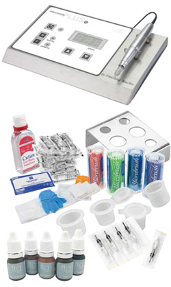

What is semi permanent make up (SPMU)?
SPMU, also known as permanent make-up, micro-pigmentation, permanent cosmetics, intra-dermal cosmetics or cosmetic tattooing has been
successfully undertaken for many years by both celebrities and busy women, creating a beautiful and fresh make-up look that lasts.
Semi permanent make up will enhance your natural beauty and give your features shape and definition, e.g. perfectly shaped eyebrows
and defined lips without having to visit your make up bag. After just one procedure you can have stunning smudge free make up that will last for several years.
What is Micro-pigmentation?
Micro pigmentation is the term used for applying coloured pigments into the dermal layer of the skin using a
state-of-the-art machine designed specifically for the cosmetic market. These digital systems are very different
to conventional machines and inks in tattoo studios. The procedure is completely safe and effective and is used for
a variety of semi permanent cosmetic enhancements e.g. eyebrows, eyeliners and lips.
What is the difference between Microblading and Micro-pigmentation?
Microblading is a permanent makeup technique that falls under the guidelines of tattoo artistry. Eyebrow Embroidery and 3D Feather Hair Stroke methods are all applications of Microblading. Microblading is a relatively new, manual method of tattooing. It is considered to be semi-permanent, as compared to the traditional hairstroke techniques done with a machine. It is done using a very fine blade to deposit pigments into the dermis. Micropigmentation is permanent eyebrow tattooing or semi-permanent makeup method. This method is done with a digital machine. The colour is implanted deeper into the skin-known as the dermal layer. It lasts longer than Microblading or Eyebrow Embroidery method. Micropigmentation only needs to be re-touched every 2 to 5 years, sometimes longer. The skin does take slightly longer to heal being that is was done with a digital pen therefore the treated area needs aftercare ointment for approximately a week. The appointment time for this procedure is approximately 2 hours. This procedure lasts longer and costs more. Also, while Microblading focuses almost only on eyebrows Micro-pigmentation can be applied to other areas such as eyeliners, lips and scalp. Here at Skinskin we do Micro-pigmentation as it provides better results than Mircroblading.
Free consultation and patch testing
We provide free of charge no obligation consultation to address your questions and concerns. We will also discuss your request and assess face shape and colour. A patch test 24 hours prior the treatment is essential. The patch test is a crucial routine procedure to ensure the client does not have an allergic reaction to the anaesthetic and hypo allergenic pigment. The test is offered free of charge and only take a few moments.
Who can benefit from semi permanent makeup?
- Busy mums and business women who want to look their best at all times
- Anyone who desires freedom from conventional daily make-up routine
- Anyone with allergies reactions to conventional make-up
- Anyone with sparse or no eyebrows/eyelashes
- Anyone who seek correction of a asymmetrical facial feature
- Athletes and swimmers
Semi Permanent Eyebrow Enhancement:
Suitable for anyone who requires emphasis of the eyebrows saving you time as you never have to pencil them again. The procedure will also add delicate natural looking hair stokes to your existing natural brows which is particularly benefit clients with spares or non-existent eyebrows. You also have choices between soft texture look, hair simulation or a bold powdered look.
Semi Permanent Eyeliner Enhancement:
Provide you with a defined eyeliner or subtle shadow. Eyeliner enhancement can create emphasis on your eye colour, make your eyelashes appear thicker and add more depth and definition to your eyes. It can even make your eyes appear larger, more striking and attractive. Permanent eyeliner will give you a neat and natural look which is smudge free.
Semi Permanent Lip Enhancement:
Lip liner and full colour though micro-pigmentation is an excellent way of enhancing the shape and colour and dramatic fullness to your lips. As you age, the lip colours and contours fade over time. semi permanent lip enhancement can help to restore, enhance and define your lips with subtle colour as well as flirt with the natural lip contour and introducing a haze of colour across your lips. The procedure can also correct asymmetry to a degree and your lips will always stay beautiful.
How long will the makeup last?
Although pigment molecules stay in the skin indefinitely, the colour remains visible 1-2 years, depending on your age, skin type, colour choice and lifestyle etc. For optimum results you should expect to attend a colour boost or top up session within 12 - 18 month.
What is the semi permanent makeup procedure?
Once you pass the patch test, there will be a 2 stage procedure, i.e. Visit 1 is the "Base Coat" and Visit 2 "Perfects". Your procedure is not deemed complete until you have had both treatments. Your second visit can be booked after 5 weeks and before 3 months. Please note if after 3 month it is deemed a re-touch and you may be charged accordingly.
Is the procedure painful?
Everyone is different but with advanced new equipment and techniques, discomfort is minimal.
Do I have a choice on shape and colour?
Yes. You are consulted every step of the way from desired shape to colour selection. There also some forms for you to fill in and sign should you agree to proceed with the procedure?
What happens after the procedure?
Immediately after procedure the area treated may appear swollen and the colour will appear darker and more intense. This will last for several days. Complete healing can take up to six weeks for the pigment to mature in the skin and the true colour to emerge.
PRE Semi Permanent Makeup Treatment
Avoid drinking coffee, taking anti-inflammatory medication such as ibuprofen, aspirin (unless medically advised) alcohol the night before your treatment. Any tweezing, waxing, facial hair tinting or eyelash curling should be done 48 hours prior to treatment and 1 week post procedure. For eyeliner, you should not wear eyelash extensions. Also you cannot wear contact lenses during the procedure, please bring conventional glasses if needed. For Lips, if you are prone to cold sores it is likely you will have an outbreak. Take necessary precautions to avoid.
On the day of your treatment
You must be in good health on the day of your treatment. Please eat before you visit the clinic which will help with your blood sugar levels. You will be required to filling consent and treatment forms and will have your photograph take before and after the treatment. These will be stored securely by us.
POST Semi Permanent Makeup Treatment.
Aftercare is the key. If you can keep the area clean and do not pick, your procedures will heal quickly and look beautiful. You may notice whiteness or blanching around the area, which is quite normal and will subside in a few hours. Do not allow water to go directly onto the treated area. If it does, please blot dry with clean gauze, but do not wipe. The area may still be numb and be slightly swollen. The numbing will subside within a couple of hours. The swelling should subside within 2 days. In some cases there may be bruising. This should last no longer than 1 week. If the area weeps, you can gently blot the area with tissue to remove the moisture. Do not rub. You will not be able to apply makeup for 24 hours after your treatment. We strongly recommend using new products to avoid a bacterial contamination. Ideally you should not visit gym, sauna, Jacuzzi or swim for 24 hours. If you are given some aftercare ointment for eyebrows and lip liner procedures, use it sparingly. Apply 1-3times a day with clean hands and a clean cotton bud. If your lips feel dry, apply more frequently but do not over use, which may affect pigment retention. Do not pick or pull the area. It may result in infections or pigment loss.
Why choose us to have the treatment?

Qualified Technician & Professional Support: Our technician is Diploma trained by FinishingTouches Group, UK's leading solution and training institution in semi-permanent makeup and cosmetic and medical tattooing. We have the best technical and consultation support from FinishingTouches Group.
High Standard Equipment & Medication: We only the high quality equipments, medication and products approved or suggested by FinishingTouches Group. We use Precision Plus Cosmetics Tattooing Machine for our treatments, which is simply the best semi-permanent makeup and cosmetic tattooing system available in the industry.
Best Service and Care: We provide high level care and services. Therefore, our experienced technician will ensure that your visit and treatment is as informative, comfortable and professional as possible. Each client is unique to us, and we always provide individualised consultations and solutions to satisfy each and every one.
Private Clinic Environment: Our private clinic located in Lower Earley Reading will provide you with a very nice private environment for your procedure. You will receive complete one to one attention throughout every stage of your procedure i.e. from consultation to 2 stage treatment.
Fully Insured Treatments: All our semi permanent makeup treatment services are registered and fully insured with Holistic Insurance Services, who is a leading Complementary Therapists insurer in UK. We are their registered member, who needs to be examined and qualified subject to the highest qualification, regulated procedure and skill level requirement.
High Client Satisfaction: Our clients are very happy with their results they get. Many of them return to have additional areas. We also have many recommended new clients from our regular loyal customers.
Important Facts
- You must be over 18.
- You cannot be pregnant or breastfeeding.
- You must be well on the day of your procedure. Discuss with your technician if you have any doubts.
- You will need two treatments, 4-6 weeks apart.
- For the best possible results and to avoid complications, always follow the aftercare advice given by your technician.